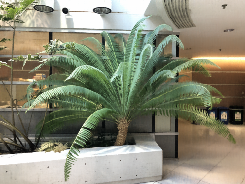
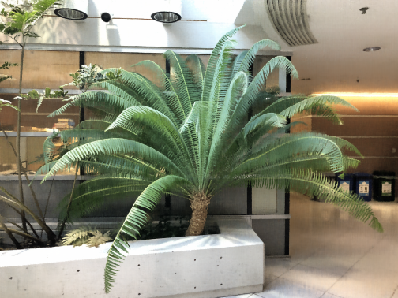
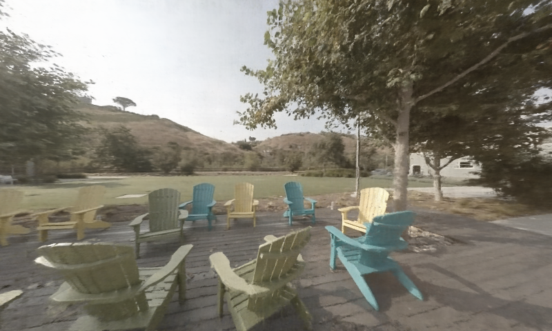
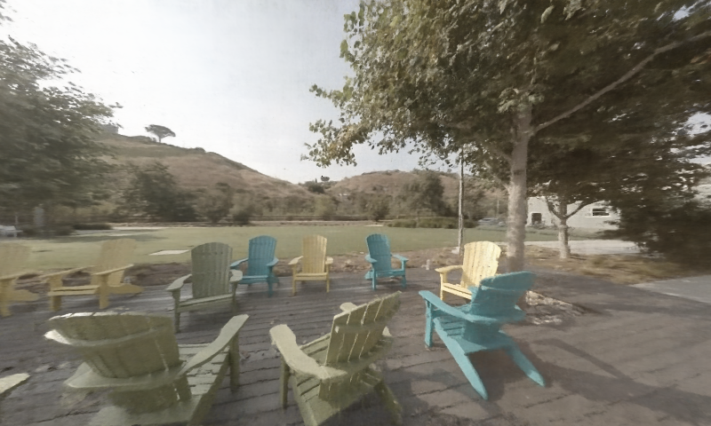
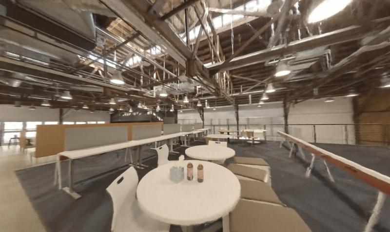
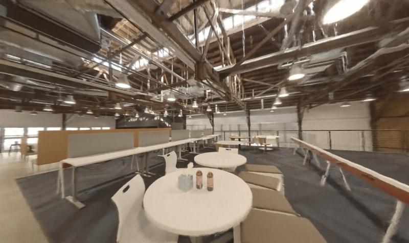

NeRF-MIR:
Neural Radiance Fields for Masked Image Restoration

Abstract
Neural Radiance Fields have exhibited remarkable performance in novel view synthesis. However, there remains a gap in research when it comes to the recovery of 3D scenes from corrupted images, a common occurrence in natural scene captures, which can notably undermine NeRF's efficacy. In this paper, we introduce NeRF-MIR, a novel neural rendering technique designed for the restoration of masked real-world images. This underscores the potential of deploying NeRF in the domain of masked image restoration. Observing that randomly emitting rays to pixels in NeRFs cannot effectively learn intricate image textures, we propose a Patch-Based Entropy for Ray Emitting (PERE) strategy to properly distribute the emitted rays, which enables NeRF-MIR to fuse effective information from images of different views. Then, we develop a Progressively Iterative Restoration (PIRE) mechanism to restore the masked regions in a self-training process. In addition, we implement a dynamically-weighted loss mechanism, adeptly recalibrating the loss weights between masked and unmasked regions. On the other hand, as existing datasets do not support NeRF-based masked image restoration, we build new datasets to simulate corrupted scenarios. Extensive experiments on both synthetic and real-world datasets show that NeRF-MIR is superior to its counterparts in masked image restoration..
Video
Dataset


LLFF-M Results
Slide to remove mask!
 


Comparison Against original NeRF on LLFF-M dataset
Original NeRF
NeRF-MIR
The effect of different progressively iteration
t = 1
t = 5
t = 10
t = 20
Space-M Results
Slide to remove mask!
 

 

Comparison Against original NeRF on Spaces-M dataset
Original NeRF
NeRF-MIR
Real-world scenes
Dataset
Real-world scenes Results
Defoliation
Snowflakes
Petal
Slide to remove mask!

Defoliation
Snowflakes
Petal